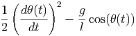

[prev] [prev-tail] [tail] [up]
O método de Adams-Moulton consiste de um esquema recursivo do tipo:
Exemplo 10.7.1. Adams-Moulton de quarta ordem
O método de Adams-Moulton é implícito, ou seja, exige que a cada passo, uma equação em  seja resolvida.
[prev] [prev-tail] [front] [up]